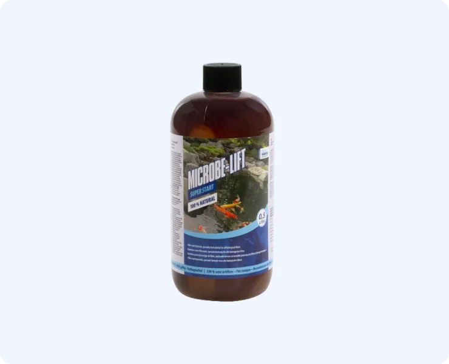

Биопрепараты
Старт. бактерии Microbe-Lift Super Start, 500мл, для пруда до 80000л
Цена и наличие
- 1 шт.240,5 BYN / шт.В наличии
Данные на 23.11.2026.
Характеристики
- Размер емкости
- 500 мл
- Для прудов макс. объемом воды
- до 80000 л
- Назначение
- стартовые бактерии для запуска системы фильтрации
- Страна
- Нидерланды
Описание
Microbe-Lift® Super Start содержит специальную смесь бактерий для всех типов прудовых биологических фильтров.
Комплекс стартовых бактерий для запуска системы фильтрации Microbe-Lift Super Start, 500 мл на 40-80 м3 Microbe-Lift® Super Start содержит специальную смесь бактерий для всех типов прудовых биологических фильтров. Большинство биомеханических фильтров имеют то преимущество, что в них используется фильтрующая среда с высоким соотношением площади поверхности к объему. Этот материал обеспечивает достаточное количество биомассы в виде биопленки для эффективного удаления органических и неорганических загрязнений из воды. В этой биопленке возможно осуществление аэробных, факультативно-анаэробных, анаэробных и хемосинтетических процессов при наличии всех необходимых бактерий. Microbe-Lift® Super Start содержит все эти бактерии для оптимального старта фильтра для водоема. При правильном дозировании Super Start обеспечивает быстрый запуск фильтра, расщепление аммиака, нитритов и нитратов, уменьшает шлам в фильтре. Препарат эффективен в широком диапазоне значений pH. Его действие значительно уменьшает запаха от мертвых водорослей, экскрементов рыб и т.д., а также снижает содержание сероводорода. Перед применением необходимо проконсультироваться со специалистом.
Применение и дозировка
Запустить насос на 2 часа для намокания фильтрующих материалов фильтра, при этом УФ-излучатель не должен работать. Далее выключить насос, вылить Super Start в фильтр. После этого подождать 2 часа и включить насос. УФ-излучатель подключается через 24 часа после заполнения фильтра стартовыми бактериями. 4 – 20 м³ прудовой воды = 0,2 л; 20 – 40 м³ прудовой воды = 0,3 л; 40 – 80 м³ прудовой воды = 0,5 мл; 80 – 120 м³ прудовой воды = 0,75 л; 120 – 160 м³ прудовой воды = 1,0 л; 480 – 640 м³ прудовой воды = 4,0 л;